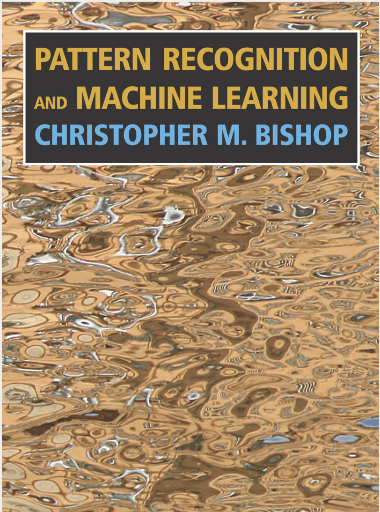

Projects and skills
University of Utah Research Assistant 2021-2023
Peter gained his optoelectronic skills while participating in Dr.Rogachev's laboratory.
He was in charge of a on going project, which consists of spectrum analysis of a commercial OLED.
The project, in short, is where we try to discover a modeling method for OLEDs through it's light spectrum. The desired modeling is
completed through admittance spectroscopy.
 The definiton of admittance spectroscopy is the inspeciton on the current response of a device to small AC bias voltage modulation and its dependence on frequency.
If we picture the OLED as a circuit that consists of series of capacitance(Energy stored) and resistors (Emitting layer), the conductance and susceptance of the circuit
can successfully depecit the electrical chracteristics of our OLED. This brings further understanding on the OLED that one might not know of, the specturm analysis alone
gives one the ability to harness the chractreistics of one's need.
The definiton of admittance spectroscopy is the inspeciton on the current response of a device to small AC bias voltage modulation and its dependence on frequency.
If we picture the OLED as a circuit that consists of series of capacitance(Energy stored) and resistors (Emitting layer), the conductance and susceptance of the circuit
can successfully depecit the electrical chracteristics of our OLED. This brings further understanding on the OLED that one might not know of, the specturm analysis alone
gives one the ability to harness the chractreistics of one's need.
The position requires
extensive maitainence of structured Lab view code,python simulation, and LTspice for typical operational amplifer designs.
The design that Peter was in charge of was a two stage amplifing process which consists of two AD8065 high speed amplifers,
with a stable feed back network and high cut off frequency, allowing our project to reach higher spectrum for better data analysis on
our program.
Machine Learning
Machine learning basics. Peter spent some time building a practice code that consists of executing machine learning techniuqes such as Guassian fit on random data found online. Using maximum likelyhood and designing neural network(main just trigger functions), he is still in the process of learning the basics of Machine learning. The book that Peter is following is called "Bishop-Pattern-Recognition-And-Pattern-Learning".
Website designing
Peter helped desgin and maintain the website for his fater Luke Chan  Peter spent some time building a practice code that consists of executing machine learning techniuqes such
as Guassian fit on random data found online.
Using maximum likelyhood and designing neural network(main just trigger functions), he is
still in the process of learning the basics of Machine learning. The book that Peter is following is called "Bishop-Pattern-Recognition-And-Pattern-Learning".
click for more info
Peter spent some time building a practice code that consists of executing machine learning techniuqes such
as Guassian fit on random data found online.
Using maximum likelyhood and designing neural network(main just trigger functions), he is
still in the process of learning the basics of Machine learning. The book that Peter is following is called "Bishop-Pattern-Recognition-And-Pattern-Learning".
click for more info